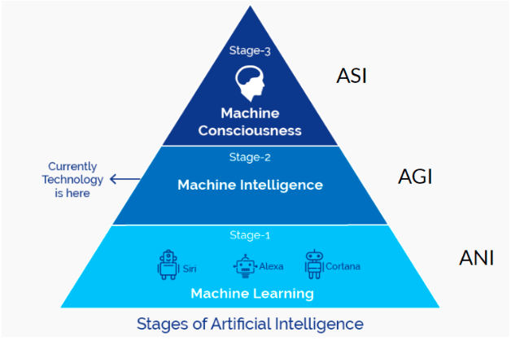

AI significa inteligência artificial. Refere-se à capacidade de um programa, de um computador ou máquina de imitar ou replicar o comportamento humano inteligente. Isso pode incluir tarefas como resolução de problemas, aprendizado e tomada de decisões. A AI é um campo em rápido crescimento que tem o potencial de transformar muitos setores, indústrias e aspetos das nossas vidas.
A AI é usada para uma ampla gama de aplicações, incluindo tradução de idiomas, reconhecimento de imagem e fala e veículos autónomos. Em muitos casos, a AI pode ser usada para automatizar tarefas que seriam demoradas ou difíceis de serem executadas por humanos, como analisar grandes conjuntos de dados ou tomar decisões complexas. A AI também é usada em vários setores, desde saúde e finanças até agricultura e transporte. Cada vez mais a AI está integrada nas nossas vidas diárias, mesmo de maneiras que podemos não perceber. Por exemplo, a AI é usada em muitos dos produtos e serviços que usamos regularmente, desde assistentes virtuais como Siri e Alexa até algoritmos de recomendação em serviços de streaming como Netflix. À medida que o campo da AI continua a avançar, espera-se que os usos potenciais desta tecnologia se expandam ainda mais.
AI é desenvolvida por meio de uma combinação de ciência da computação, matemática e engenharia. O desenvolvimento da AI normalmente envolve a criação de algoritmos que permitem que um programa de computador ou máquina processe e analise grandes quantidades de dados para tomar decisões ou previsões. Isso pode incluir técnicas como aprendizado de máquina, em que um programa é treinado em um grande conjunto de dados e é capaz de melhorar seu desempenho ao longo do tempo. Além disso, os sistemas de AI geralmente incorporam elementos de neuro-ciência e psicologia para modelar melhor a cognição e o comportamento humano.
A história da AI remota à década de 1950, quando os pesquisadores começaram a explorar o conceito de máquinas que poderiam pensar e raciocinar como humanos. Um dos primeiros exemplos de AI foi um programa chamado General Problem Solver, desenvolvido por Herbert Simon e Allen Newell no final dos anos 1950. Este programa foi capaz de resolver problemas simples usando lógica e raciocínio, estabelecendo as bases para futuras pesquisas de AI.
Nas décadas de 1980 e 1990, a pesquisa de AI começou a se concentrar mais no uso de aprendizado de máquina, que envolve treinamento de algoritmos em grandes conjuntos de dados para fazer previsões ou decisões. Isso levou ao desenvolvimento de sistemas de AI capazes de realizar tarefas como reconhecimento de imagem e fala, que se tornaram cada vez mais comuns no mundo atual
Existem vários tipos diferentes de AI que são correntemente discutidos no campo. As três principais categorias são AI limita, AI geral e AI super inteligente.
A Inteligência Artificial Limita (ANI) limita, também conhecida como AI fraca, é uma AI projetada para executar uma tarefa específica ou um conjunto de tarefas. Esse tipo de AI é atualmente o mais comum e é usado em uma ampla gama de aplicações, desde assistentes virtuais como Siri e Alexa até carros autónomos. A AI limita é limitada em suas capacidades e não é capaz de se adaptar a novas situações ou aprender por conta própria.
A Inteligência Artificial Geral (AGI) geral, também conhecida como AI forte, é a AI que tem a capacidade de entender ou aprender qualquer tarefa intelectual que um ser humano possa. Atualmente, esse tipo de AI não existe, mas é o objetivo final de muitos pesquisadores de AI . Se e quando for alcançado, a AI geral teria a capacidade de pensar e raciocinar como um ser humano e, potencialmente, até superar a inteligência humana.
A Super-inteligência (ASI) super inteligente é um tipo de AI que vai além da inteligência humana e possui capacidades atualmente inimagináveis. Esse tipo de AI é altamente especulativa e a sua existência potencial levanta questões éticas e sociais significativas. Alguns especialistas acreditam que o desenvolvi3 mento de AI super inteligente pode ser potencialmente perigoso se não for gerida com cuidado.
É importante observar que essas categorias de AI não são rígidas e há alguma sobreposição entre elas. Por exemplo, um sistema de AI projetado para executar uma tarefa específica também pode ter alguma capacidade de aprender e se adaptar a novas situações, tornando-o uma combinação de AI restrita e geral.
Enquanto AI apresenta potencial para trazer muitos benefícios, esta também carrega consigo alguns riscos e perigos. Uma das maiores preocupações é o potencial uso da AI de formas maliciosas, como por exemplo no desenvolvimento de armas autónomas ou em cyber ataques.
Outra grande preocupação é a possibilidade da AI causar o aumento do desemprego, visto esta substituir o ser humano nas tarefas que este tem de realizar. Em muitas áreas poderá haver fortes perdas de emprego, podendo isto levar a uma disrupção na economia. Assim que os sistemas de AI se tornem mais avançados e estes consigam ser capazes de desempenhar tarefas que atualmente são realizadas por seres humanos, vai haver desemprego em larga escala.
Adicionalmente, há preocupações sobre AI poder tomar decisões que têm consequências negativas. Por exemplo, um veículo automático pode tomar a decisão de se desviar de um obstáculo, apenas para causar um acidente ainda pior durante o processo. Há também a probabilidade de sistemas AI serem enviesados, quer seja através dos dados ou dos algoritmos usados para o treino dos mesmos.
Vários filmes foram feitos com o tema AI. Um dos mais aclamados pelas críticas e mais reconhecidos internacionalmente é o filme "I, Robot"protagonizado por Will Smith, que pretende mostrar e dar ênfase aos perigos da AI. O filme tem lugar num futuro onde os robôs são dominantes, parte do quotidiano das pessoas. Este filme de ficção científica explora o tema inteligência artificial e as consequências negativas da criação e desenvolvimento da tecnologia, levantando questões sobre o papel da AI na sociedade e o que pode vir a acontecer se as máquinas se tornarem mais inteligentes do que os seres humanos.
Em suma, o desenvolvimento de AI tem muito potencial para revolucionar vários aspetos das nossas vidas. Desde carros capazes de se deslocar de forma autónoma em modo piloto automático, casas inteligentes controladas por robôs que desempenham as tarefas domésticas do dia a dia, até sistemas médicos de análise e diagnóstico avançados. A AI é já muito usada atualmente numa alta variedade de aplicações. No entanto, o rápido crescimento da AI trás problemas que têm de ser medidos de forma cautelosa. É importante que cientistas, e a sociedade em geral como um todo, considerem cuidadosamente os perigos e benefícios da AI e tomem medidas para garantir que esta tecnologia é desenvolvida e usada de uma forma responsável e ética, minimizando as consequências negativas do seu uso. Com planeamento cuidadoso e com consideração, podemos aproveitar e extrair o poder da AI para melhorar as nossas vidas e criar um futuro próspero para todos.